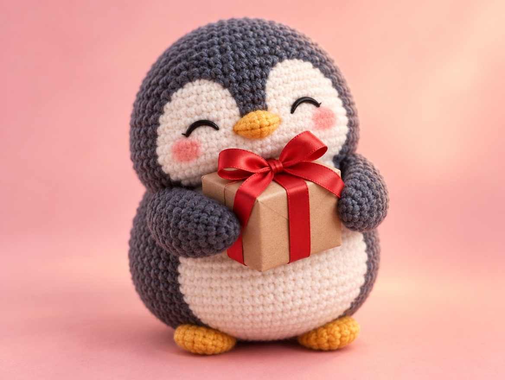

🧪 LAB · 試作 — AIが読書メモから一気に作った記事です。本番の一覧には出していません · 試作の一覧
🐧 EVERYDAY LIFE⚡ 35 SEC
Add your feeling after "thank you," and it reaches people more 💌

Sound Familiar
When you get something, do you ever just say "Thank you" and stop there?
Of course, just "Thank you" makes people happy too.
The Point
But if you add 1 of your feelings after it, it reaches them more.
The Reason
Just "Thank you" can sometimes sound like a usual greeting.
With feeling words, they understand, "They were really happy."
For Example
For example, when you get cookies, say, "Thank you, they were so tasty!"
When you hear a friend's song, it is "Thank you, it moved me!"
⚡ TRY IT
The thank-you combo
Your friend gave you homemade cookies. 🍪 Pick a feeling, then say it!
I made cookies for you!
Oh, you're welcome.
Yay! I'll make more next time!
Really? I'll teach you the recipe!
Aww, now you made MY day!
Stop it~ You're the best too!
"Thank you!"
a feeling?
"I'm so happy!"
"They were so tasty!"
"You made my day!"
"You're the best!"
✨ Combo ×2!
Combos found: 0/4
🏅 Feeling master! Your thank-yous are full of heart.
Try This
For your next "Thank you," try to add 1 feeling, even a short one.
Just adding 1 word makes "Thank you" warmer.
📚 I wrote this from my reading notes.